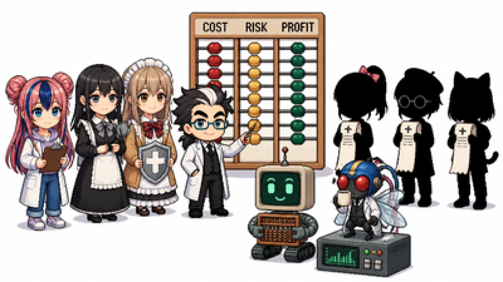
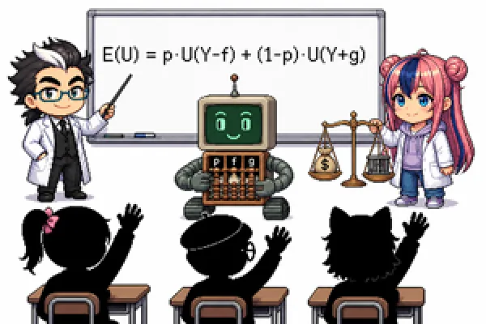

AI 범죄 연구실 · 보충본
범죄자의 계산서를 뒤집어라
AI는 왜 범죄자에게 '남는 장사'가 되었을까. 범죄경제학·게임이론·AI 분석으로 계산하고, 대응책으로 다시 계산한다.

처음 오신 분께 — 이 사이트를 3줄로
- 무엇을: AI가 범죄에 쓰인 실제 사례를 서장과 10개 장에 걸쳐 풀어 본다.
- 왜 중요한가: 범죄자도 비용과 이익을 따진다. 그 계산을 알면 막을 곳이 보인다.
- 생활·업무에서는: 장마다 '계산서 뒤집기'로 개인·조직·정책이 할 일을 정리한다.
코드와 수식을 몰라도 됩니다. 마지막 장 '실전 연습장'에서 직접 운영해 볼 수 있습니다.
AI 범죄 시대, 자기 방어의 지혜 · 안상선 지음 · 커뮤니케이션북스(인공지능총서) · 2025년 10월 10일 · ISBN 9791143009050 이 사이트는 그 책을 사례·모의 데이터·시뮬레이션으로 풀어 쓴 보충본입니다. Google 도서에서 보기 · 저자 소개책 소개 — 『AI 범죄와 자기 방어』

박사해설자
이 연구실에서는 범죄를 도덕 이야기로만 읽지 않습니다. 범죄자도 손익을 따지는 사람이라는 가정에서 출발합니다. AI가 무엇을 바꿨는지 알려면 범죄자의 계산서를 먼저 펼쳐 봐야 합니다.

X1범죄자 대역 · 사기·사칭
저희는 범죄자 역할을 맡은 대역입니다. 진짜 범죄자가 아니니 안심하세요. 다만 계산은 진짜처럼 합니다.

X2범죄자 대역 · 자동화 공격·랜섬
저는 자동화 공격과 랜섬웨어를 맡습니다. 막히면 배우고 다시 옵니다.

X3범죄자 대역 · 세탁·정보 브로커
저는 정보를 사고, 돈을 옮깁니다. 보이지 않는 곳에서요.

조수(하루)추적 팀 · 대응 설계
그리고 우리 추적 팀은 그 계산서의 숫자를 하나씩 바꿔서, 범죄가 '밑지는 장사'가 되게 만드는 방법을 찾아요.

인턴1 시아추적 팀 · 현장 사례
저는 현장 사례를 쫓아요.

인턴2 모아추적 팀 · 제도·법
저는 제도와 법을 쫓아요.

주판봇계산 담당
계산은 제가 해요! 가끔 너무 빨리 확신하지만요.

초파리 연구원데이터·모델 분석
그럴 땐 제가 의심하고 데이터를 다시 돌립니다.
이 시리즈의 결론 먼저
네 가지 분석 도구
| 도구 | 묻는 질문 | 대표 장 |
|---|---|---|
| 범죄경제학 | 범죄 한 번의 기대이익은 얼마인가, 어느 숫자를 바꾸면 0 아래로 내려가나 | 서장·2·8·10장 |
| 게임이론 | 범죄자와 방어자가 서로의 수를 읽을 때 어디서 멈추나(균형) | 3·4·7·9장 |
| AI·데이터 분석 | AI는 공격과 탐지에서 무엇을 계산하나, 그 한계는 어디인가 | 1·5·6장 |
| 강화학습 시뮬레이션 | 제도(규칙·인센티브·디스인센티브·강제력)를 바꾸면 에이전트는 무엇을 배우나 | 모든 장의 마지막 단계 |
장마다 같은 흐름
- 처음 오신 분께 3줄 → 왜 이 장이 필요한가 → 큰 그림
- 본문 단계 — 단계마다 박사의 현장 질문으로 시작해 해석 문장으로 끝나고, 단계 대화와 확인 퀴즈가 붙는다. 원고의 논지를 박사가 풀고, 시아·모아가 사례와 제도를 추적한다. X1~X3는 '범죄자의 계산서'를, 주판봇·초파리는 모의 데이터 분석을 들고 나온다.
- 분석 도구 단계 — 범죄경제학·게임이론·AI 중 하나를 골라, 왜 쓰는지와 수식을 조수(하루)가 대신 묻고, 직접 바꿔 보는 실험을 한다.
- 제도 설계 — 이 장의 규칙·인센티브·디스인센티브·강제력을 한 표로 정리한다.
- 강화학습 시뮬레이션(마지막 단계) — 제도를 켜고 끄며 에이전트가 배우는 행동을 본다.
- 대결 · 정리 퀴즈 · 아웃트로 · 지식 색인 · 꾸러미
장 목록
서장
진화하는 사이버 범죄
의심했는데도 속는 이유, 그리고 범죄자의 계산법
분석 도구 · 범죄경제학
1장
AI 범죄, 새로운 디지털 위험의 시대
사기꾼 한 명이 하루 몇 명을 속이던 시대에서, AI 한 대가 수천 명과 동시에 대화하는 시대로
분석 도구 · AI·데이터 분석

2장
범죄자의 경제학 — AI가 범죄를 매력적으로 만드는 이유
베커의 부등식으로 계산한 AI 범죄의 손익분기점
분석 도구 · 범죄경제학
3장
진짜인 듯 가짜인 세상 — 딥페이크의 위협
보는 것이 믿는 것이던 시대가 끝났을 때, 성공 확률 π는 얼마나 오르는가
분석 도구 · 게임이론
4장
완벽한 사기꾼 — AI가 바꾸는 피싱과 사회공학
정교함과 대량을 동시에 — 개인화 비용이 0에 가까워질 때
분석 도구 · 게임이론
5장
끊임없는 진화 — AI 기반 자동화 공격의 세계
막히면 배우고, 배우면 다시 온다 — 공격은 싸지고 입증은 비싸졌다
분석 도구 · AI·데이터 분석
6장
보이지 않는 눈 — AI 감시와 프라이버시의 위기
개인정보는 범죄의 원재료다 — 조각 몇 개면 '세상에 나 하나'가 된다
분석 도구 · AI·데이터 분석
7장
보이지 않는 손의 조작 — AI와 금융 범죄
AI는 앞단을, 암호화폐는 뒷단을 맡는다 — 훔친 돈이 '확정'되는 구조
분석 도구 · 게임이론
8장
나만의 디지털 방패 만들기
개인 보안도 투자다 — 생활유형별로 계산한 비용과 효과
분석 도구 · 범죄경제학
9장
함께 만드는 안전한 AI 사회
나만 지키면 위험은 이웃으로 간다 — 외부성과 사이버 집단 면역
분석 도구 · 게임이론
10장
미래를 준비하는 디지털 생존 전략
막는 힘에서 버티는 힘으로 — 그리고 범죄자의 계산서를 마지막으로 뒤집기
분석 도구 · 범죄경제학

마지막 장
실전 연습장
콜센터·검사 게임·랜섬 협상·기업 연결망 네 사업장을 직접 운영해 범죄자의 계산서를 뒤집어 본다.
시뮬레이터 · 미션 3개씩

현장 검증
리포트·뉴스 검증 INDEX
새로 나온 보고서와 뉴스를 책의 장과 나란히 놓고, 책의 분석이 현장에서 어떻게 확인되는지 쌓아 간다.
박사의 뉴스 소개 · 장별 대조표
분야 지도
AI 범죄학 온톨로지 지도
책의 분석 틀로 짠 13개 영역·49개 주제 위에, 책이 다룬 개념과 리포트로 확인된 개념을 겹쳐 본다.
3D 지도 · 영역별 커버리지
통합 작업본에서 원고와 프로젝트 챕터 원고를 합친 장 구성 대응표와 사실 확인 메모를, 참고문헌과 출처에서 장별 출처를, 모의 데이터와 재현 코드에서 모든 차트의 가정과 코드를 볼 수 있다.